... und so funktioniert's:
Klicken Sie ganz einfach auf den Button „KAUFEN“. Wählen Sie bei Amazon den Händler „Mobile Energy“ aus und geben Sie den folgenden Gutscheincode ein:
NOE8MWJK
Der Rabatt wird erst am Ende des Bestellvorgangs abgezogen.
ZUM ANGEBOT
 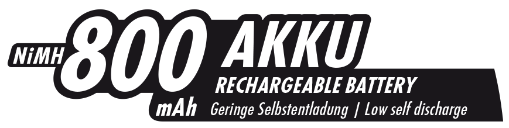
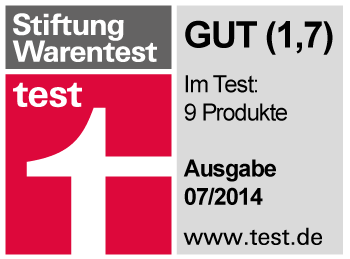
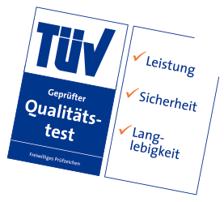
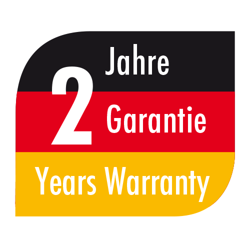
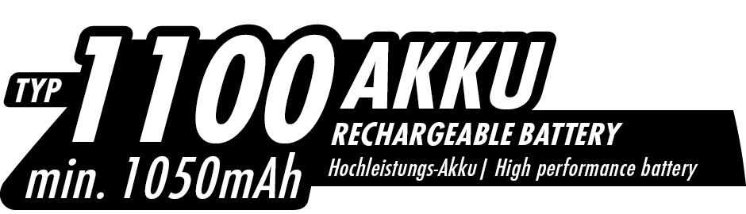
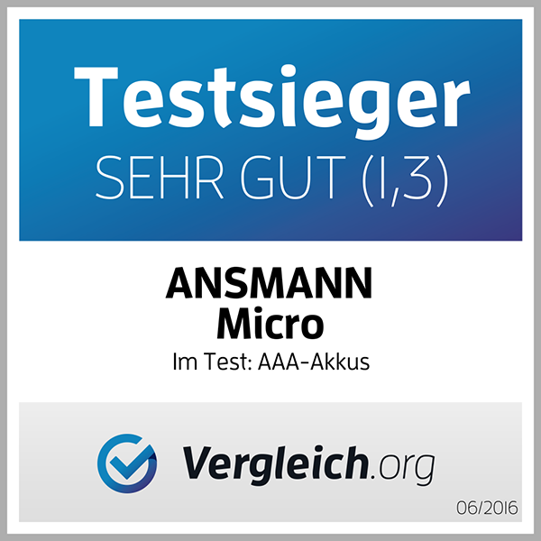
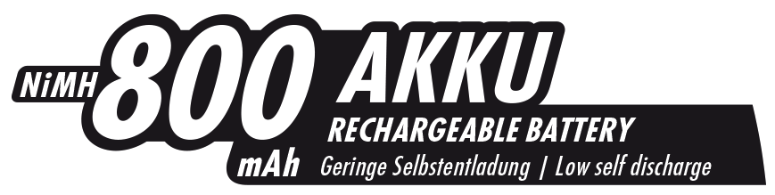
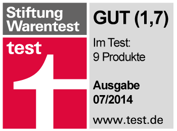
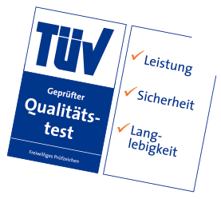
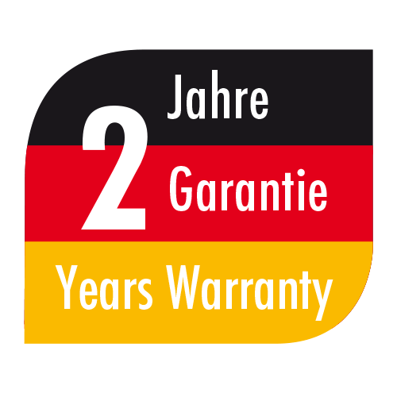
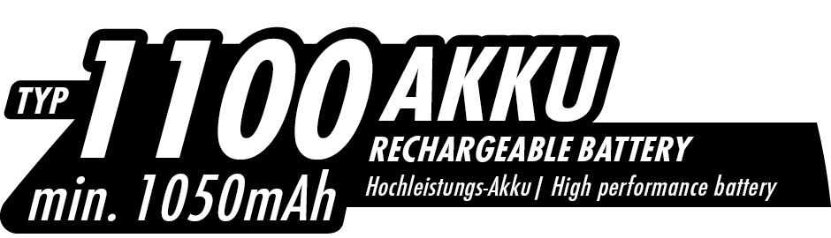
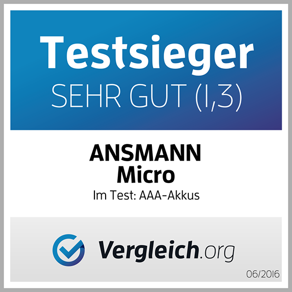
Alle Argumente im Überblick
TESTNOTE GUT (1,7)Die ANSMANN NiMH 800mAh Akkus haben die Stiftung Warentest überzeugt und mit der Note GUT (1,7) abgeschlossen. Insgesamt wurden 9 Produkte aus dem Bereich Akku getestet. |
|
| 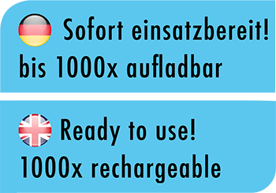 |
SOFORT EINSATZBEREITDie Akkus sind sofort einsatzbereit. Dank der maxE-Technologie ist die Selbstentladung 10mal geringer als bei normalen NiMH-Akkus. Nach einem Jahr steht noch rund 80% der Anfangskapazität zur Verfügung. Durch beste Zyklenfestigkeit sind die NiMH-Zellen bis zu 1000mal wieder aufladbar. |
NiMH 800mAh AKKUDie Akkus besitzen eine hohe Kapazität und trotzdem ist die Selbstentladung gering. Die hohe Leistungsfähigkeit ist perfekt für den Einsatz in verschiedenen Bereichen wie etwa Taschenlampen, Spielzeug, Modellbau, Spielekonsolen, Digitalkameras, Blitzgeräte, medizinische Geräte, etc. |
|
| 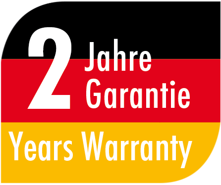 |
2 JAHRE GARANTIEDank neuster Akkutechnologie ist selbst nach mehrmaligem Teilaufladen der Memory-Effekt ausgeschlossen. Sollten dennoch wiedererwarten Probleme auftreten, gewährt ANSMANN auf alle Akkus 2 Jahre Hersteller-Garantie. |
TÜV SAARLAND GEPRÜFTDie Akkus entsprechen den aktuell geltenden EU-Richtlinien und werden somit den höchsten Anforderungen an Sicherheit und Langlebigkeit gerecht. Geprüft vom TÜV Saarland entsprechen die Akkus den elektrischen, thermischen, geometrischen und sicherheitsrelevanten Anforderungen. |
|
| 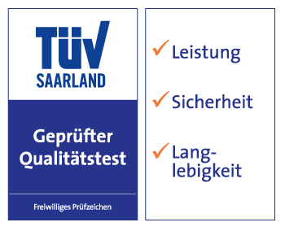 |
TÜV SAARLAND GEPRÜFTDie Akkus entsprechen den aktuell geltenden EU-Richtlinien und werden somit den höchsten Anforderungen an Sicherheit und Langlebigkeit gerecht. Geprüft vom TÜV Saarland entsprechen die Akkus den elektrischen, thermischen, geometrischen und sicherheitsrelevanten Anforderungen. |
NiMH 1100mAh AKKUDie Akkus besitzen eine hohe Kapazität und trotzdem ist die Selbstentladung gering. Die hohe Leistungsfähigkeit ist perfekt für den Einsatz in verschiedenen Bereichen wie etwa Taschenlampen, Spielzeug, Modellbau, Spielekonsolen, Digitalkameras, Blitzgeräte, medizinische Geräte, etc. |
Alle Angebote auf einem Blick
TESTSIEGER-SET
Ladegerät Powerline 8 + 8 Akkus 1100mAh
Klicken Sie ganz einfach auf den Button „KAUFEN“. Wählen Sie bei Amazon den Händler „Mobile Energy“ aus und geben Sie den Gutscheincode ein.
Der Rabatt wird erst am Ende des Bestellvorgangs abgezogen.
EE3JOKWB
STARTER-SET
Powerline 8 + 4 Akkus maxE 800mAh + 4 Akkus maxE 2100mAh
Klicken Sie ganz einfach auf den Button „KAUFEN“. Wählen Sie bei Amazon den Händler „Mobile Energy“ aus und geben Sie den Gutscheincode ein.
Der Rabatt wird erst am Ende des Bestellvorgangs abgezogen.
ANGEBOT
8er Pack
Klicken Sie ganz einfach auf den Button „KAUFEN“. Wählen Sie bei Amazon den Händler „Mobile Energy“ aus und geben Sie den Gutscheincode ein.
Der Rabatt wird erst am Ende des Bestellvorgangs abgezogen.
NJL4A5FP